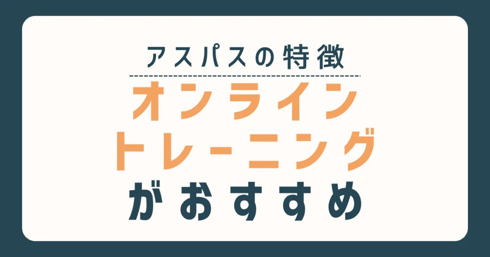
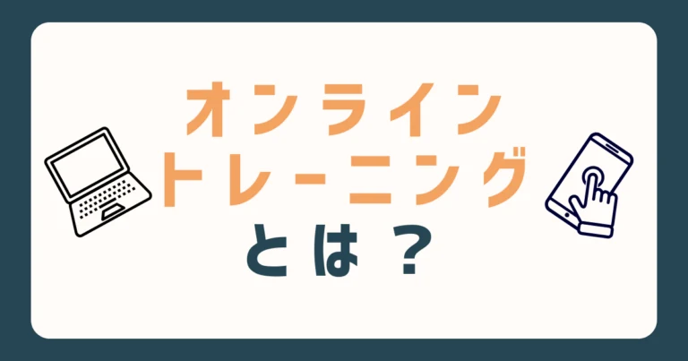
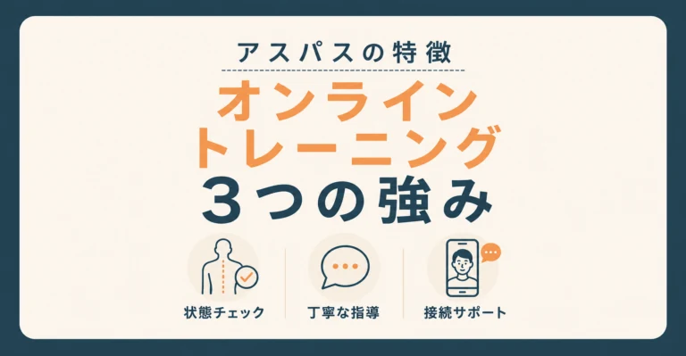
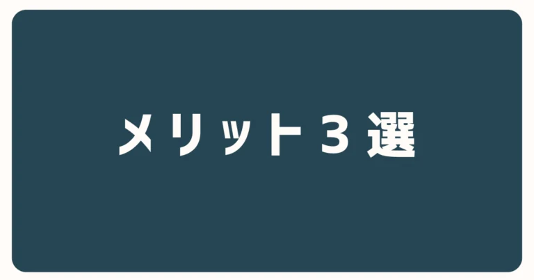
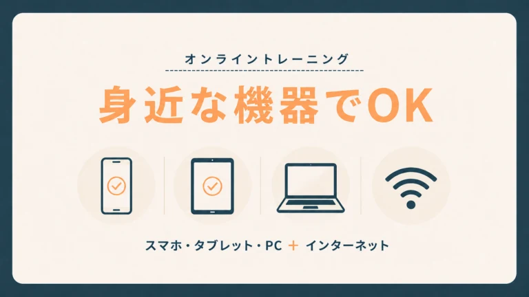
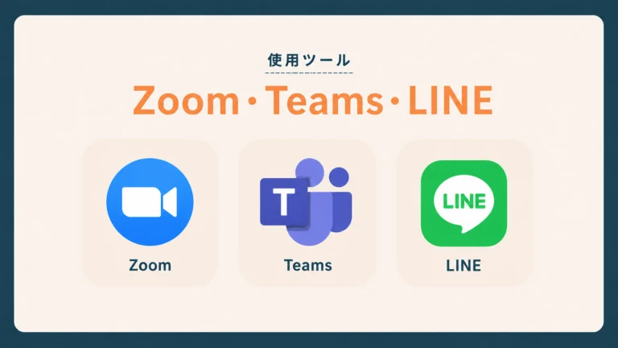
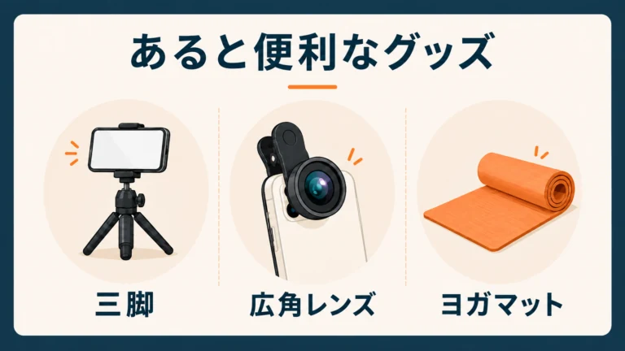
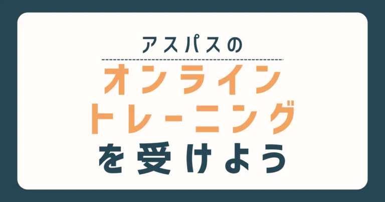

「遠くて通えない…」とお悩みのパーキンソン病の方へ。
病態を熟知し、日本一のオンライン指導実績を持つアスパス代表の山口が、アスパスのオンライントレーニングの魅力と準備を解説します。
アスパスの専門的なトレーニングを、ご自宅から始めましょう。
オンライントレーニングとは？

オンライントレーニングとは、ご自宅にいながら専門家の運動指導を受けられるサービスのことです。
スマートフォンやパソコンとインターネット環境さえあれば、離れた場所からでも直接やり取りができます。
テレビ電話のように顔を見ながら話せる機能を使い、お互いの動きをリアルタイムで確認しながら運動を進めていきます。
スタジオへ通う移動時間が省けるため、遠方にお住まいの方にも多く選ばれています。
住み慣れたお部屋でリラックスしながら、無理なく安全に身体を動かしていきましょう。
アスパスのオンライントレーニング

画面越しでも、スタジオに通うのと同じように質の高い運動ができますよ。アスパスならではの3つの特徴をご紹介します。
01身体の状態をしっかりチェックする
画面越しでも、お体の状態を正確に把握できます。
アスパスのスタッフは理学療法士としての専門的な視点や多くのオンライントレーニング経験があるのが特徴。姿勢の傾きや手足の動かしにくさなど、細かな変化も見逃しません。
その日の体調に合わせた安全な運動が可能です。
02正しい動きを丁寧に指導する
迷わずスムーズに動けるよう、わかりやすい言葉でお伝えします。
「5cm身長を高く伸ばすように背中を伸ばして」
など、丁寧にお声がけします。
運動が苦手な方でも安心です。
03オンラインの使い方も丁寧にご案内
「スマホの操作が苦手」という方もご安心ください。
事前の接続設定からしっかりサポートしています。画面の映し方や音声の出し方など、一つひとつゆっくり確認していきますよ。
気兼ねなく始めてみましょう。
オンライントレーニングのメリット3選

オンライントレーニングには、遠隔でできるからこその嬉しいメリットがたくさんありますよ。
01家が遠くても自宅から参加できる
スタジオへの移動時間を気にせず、ご自宅ですぐに運動を始められます。
画面を繋ぐだけで、お部屋が専用の空間になりますよ。
スタジオから少し離れた場所からでも、お出かけの負担がかかりません。
移動の疲れを残さず、リラックスしてトレーニングに集中しましょう。
02体調に波があっても大丈夫
パーキンソン病のお薬の影響で身体が重い時間帯（オフ期）でも、諦めずに運動を続けられます。
外出の準備が不要で、今の状態に合わせたメニューを組みます。ご自宅でのリアルな動きを確認できる分、より生活に直結するアドバイスを受けられます。
調子に不安がある時こそ、安全にサポートを活用してくださいね。
03自分の姿勢や動きをチェックしやすい
ご自身の動きをリアルタイムで確認しながら、正確なフォームで運動できます。
画面に映るお姿が、鏡のような役割になるのです。トレーナーもお手本を見せながら分かりやすくお伝えするので安心。
視覚的な確認を重ねて、正しい姿勢をしっかり身体に覚え込ませていきましょう。
オンライントレーニングに必要な機器

オンライントレーニングを始めるための準備は、驚くほどシンプル。
普段お使いの機器とインターネット環境さえあれば、すぐに画面が繋がります。
お手持ちのスマートフォンやタブレット、あるいはパソコンが1台あれば問題ありません。
特別な機材をわざわざ新しく買い揃える必要はないので、ご安心くださいね。
今ご自宅にある身近なものを使って、気軽に運動をスタートしましょう。
オンラインはZoomかTeamsを使用

ZoomやTeamsは、顔を見ながらお話しできる「テレビ電話」のような無料アプリです。
基本はこちらを使いますが、公式LINEからのビデオ通話でも手軽に始められますよ。
あると便利なグッズ

必須ではありませんが、少しの工夫でオンラインでの運動がさらに快適になります。
おすすめのアイテムをご紹介しますね。
01スマートフォン固定用の三脚
スマートフォンを固定する三脚があると非常に便利です。画面を好きな角度や高さでしっかり安定させられるからです。
立てかけるだけだと途中で倒れる心配がありますが、これなら安心ですね。
Amazonや楽天市場などの通販でも手軽に買えるので、ぜひご用意ください。
02広角レンズ
スマホのカメラに取り付ける『広角レンズ』もおすすめのアイテム。
画面に映る範囲がグッと広くなります。
動くたびにスマートフォンの向きを直す手間が減り、準備もぐっと楽になりますよ。
クリップのように挟むだけのタイプが安価なので、試してみましょう。
03ヨガマット
足元にヨガマットを敷いておくのも良いですよ。滑りにくくなり、より安全に足を踏ん張れます。
床に座ったり寝転んだりするメニューでも、体が痛くなりにくいのが嬉しいポイント。
ケガを防いで安心して取り組むために、一枚あると重宝しますね。
アスパスのオンライントレーニングはおすすめ！

アスパスが提供するオンライントレーニングのメリットや、必要な準備について解説しました。
おさらいすると、ご自宅にいながら専門的なサポートを受けられるため、遠方にお住まいの方や体調の波が心配な方でも無理なく運動を継続できるのが最大の魅力です。